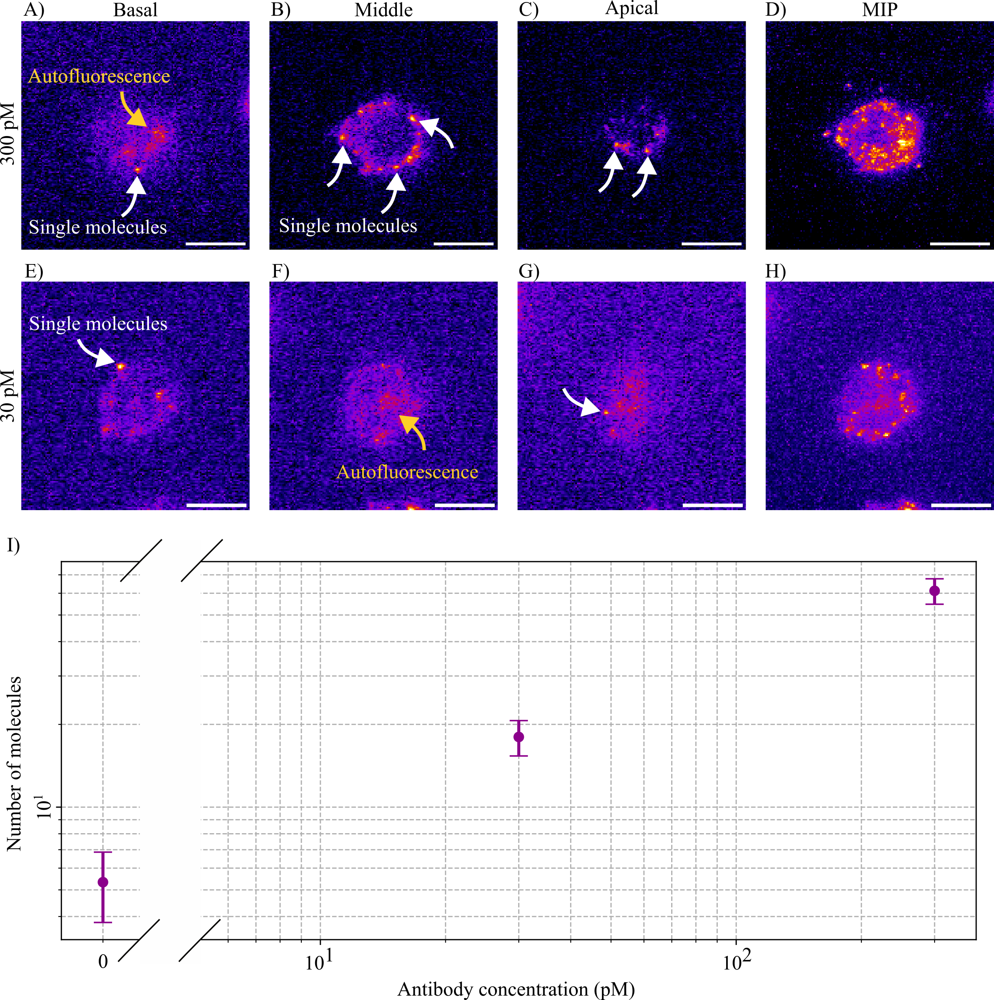
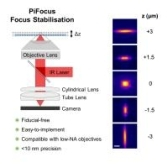

Research
Dynamic live-cell super-resolution imaging at sub-zero temperatures
This interdisciplinary project brings together the Kaminski Group (Dept. of Chemical Engineering & Biotechnology, Cambridge) and the British Antarctic Survey to develop a high-resolution microscopy platform capable of visualising protein dynamics in Antarctic fish cells at sub-zero temperatures — one of the most challenging frontiers in live-cell imaging.
I am applying advanced fluorescence microscopy techniques — including super-resolution methods and solvatochromic dyes — to probe nanoscale cellular behaviour in these extreme cold conditions. Solvatochromic probes are particularly powerful here: their emission spectra shift with local membrane polarity, allowing us to sense changes in membrane organisation and protein environment in real time, without perturbing the cell.
- Developing a cryo-compatible live-cell fluorescence imaging platform
- Using solvatochromic dyes to probe membrane dynamics at sub-zero temperatures
- Studying evolutionary cold-adaptation mechanisms in Antarctic fish cell lines
- Insights into climate-change resilience of polar organisms
Beyond polar biology, the technologies emerging from this project have broad applications: improving cryopreservation protocols, enabling long-term storage of therapeutic proteins, and driving advances in imaging for hazardous or extreme environments — from high-containment labs to potential future space exploration contexts.
Mitochondria morphology analysis pipeline
A computational pipeline built on top of Nellie's output to extract and interpret quantitative morphological parameters of mitochondrial networks — including network connectivity, branch length distributions, and motility metrics. Designed for high-throughput batch analysis of live-cell imaging data.

